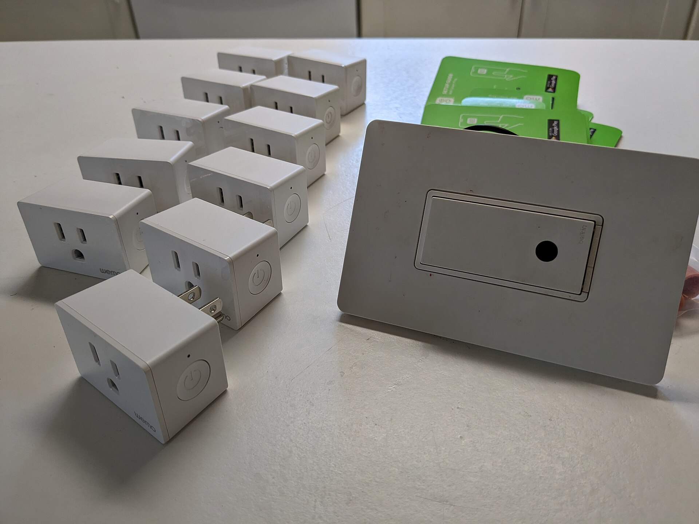
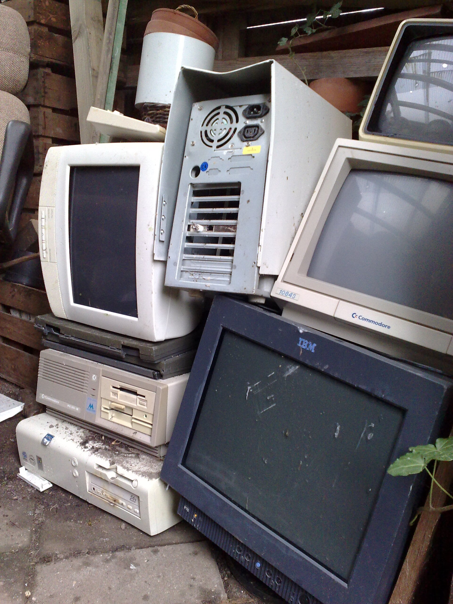

Internet przyszłości
Utopia, dystopia, rzeczywistość — technologia o wielu twarzach
Przyszłość jest już infrastrukturą

Na każdego mieszkańca Ziemi przypadają już ponad dwa połączone urządzenia.
Projektując czujnik, nie budujemy „gadżetu przyszłości”. Dokładamy kolejny węzeł do zatłoczonej i atakowanej sieci.
IoT Analytics, State of IoT 2025, 28.10.2025, https://iot-analytics.com/number-connected-iot-devices/
Nie „rzecz”, lecz pętla

Fot. NAVFAC, CC BY 2.0
Czujnik ma sens dopiero wtedy, gdy zmienia decyzję — a decyzja otwiera zawór.
Każde ogniwo może wnieść błąd, stronniczość albo opóźnienie.
Energia jest najważniejsza
Benzyna: 43,2 MJ/kg → 34,56 MJ/l
7 l/100 km → 0,672 kWh/km
Człowiek przy ciężkiej pracy: 2500–3000 kcal, czyli 10,5–12,6 MJ na dobę

Wizje przyszłości często pomijają rachunek energii. Każdy czujnik, nadajnik i serwer też go ma.
Optymalizacja ma własny rachunek

Fot. BalticServers.com, CC BY-SA 3.0
Centra danych zużyły w 2024 r. ok. 415 TWh — 1,5% światowej energii elektrycznej. Scenariusz na 2030 r.: ok. 945 TWh.
System IoT oszczędza wodę, nawóz i paliwo, ale sam zużywa energię czujnika, radia, bramy i chmury.
Porównujemy cały cykl życia wariantu z IoT i bez niego.
IEA, Energy and AI (2025), https://www.iea.org/reports/energy-and-ai/executive-summary
Twoje urządzenie, cudza broń, czyjś odpad

Raport 2026: botnet z przejętych kamer i routerów — atak DDoS 31,4 Tb/s.

2026: Belkin wyłącza chmurę Wemo — sprzęt działa, „smart” znika.

Koniec serwera nie może oznaczać elektroodpadu.
Cloudflare, 2026 Threat Report; Belkin, Wemo Support Ending (2026). Fot.: Bungle, Harborsparrow (CC BY-SA 4.0); AvWijk (domena publiczna)